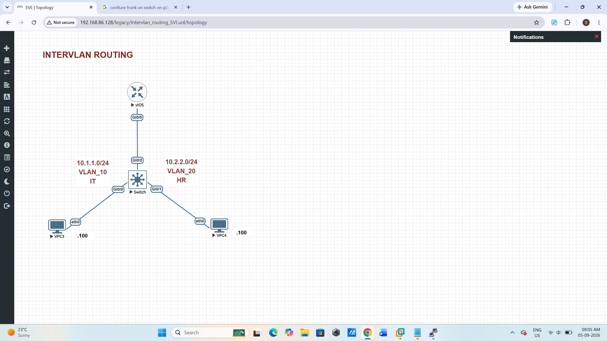

Lab 07 - Router-on-a-Stick Inter-VLAN Routing with DHCP
Objective
Use one 802.1Q trunk between a switch and router to route between the IT and HR VLANs. The router also supplies each VPCS client with an address by DHCP.
Topology

| Link / endpoint | Interface / VLAN | Addressing |
|---|---|---|
| VPC3 to Switch | Switch Gi0/0, access VLAN 10 (IT) | DHCP: 10.1.1.0/24; gateway 10.1.1.1 |
| VPC4 to Switch | Switch Gi0/1, access VLAN 20 (HR) | DHCP: 10.2.2.0/24; gateway 10.2.2.1 |
| Switch to Router | Switch Gi0/2 ↔ Router Gi0/0, 802.1Q trunk | VLANs 10 and 20 tagged |
switchport trunk encapsulation dot1q; it supports only 802.1Q and rejects that command.Part 1 - Configure the switch
Paste this from the Switch> prompt. It creates the departmental VLANs, assigns the VPCS-facing ports, and forms the router trunk.
enable configure terminal ! VLAN creation and naming vlan 10 name IT vlan 20 name HR exit ! VPC3 - IT interface GigabitEthernet 0/0 switchport mode access switchport access vlan 10 no shutdown exit ! VPC4 - HR interface GigabitEthernet 0/1 switchport mode access switchport access vlan 20 no shutdown exit ! Router uplink interface GigabitEthernet 0/2 switchport mode trunk switchport trunk allowed vlan 10,20 no shutdown exit end copy running-config startup-config
If your switch supports selectable trunk encapsulation, insert switchport trunk encapsulation dot1q just before switchport mode trunk.
Part 2 - Configure the router
Paste this from the Router> prompt. The parent interface has no IP address; the two 802.1Q subinterfaces are the VLAN default gateways.
enable configure terminal ! Keep the gateway addresses out of DHCP leases ip dhcp excluded-address 10.1.1.1 ip dhcp excluded-address 10.2.2.1 ! VLAN 10 / IT DHCP scope ip dhcp pool IT_POOL network 10.1.1.0 255.255.255.0 default-router 10.1.1.1 dns-server 8.8.8.8 exit ! VLAN 20 / HR DHCP scope ip dhcp pool HR_POOL network 10.2.2.0 255.255.255.0 default-router 10.2.2.1 dns-server 8.8.8.8 exit ! Physical trunk-facing interface interface GigabitEthernet 0/0 no ip address no shutdown exit ! VLAN 10 default gateway interface GigabitEthernet 0/0.10 encapsulation dot1Q 10 ip address 10.1.1.1 255.255.255.0 exit ! VLAN 20 default gateway interface GigabitEthernet 0/0.20 encapsulation dot1Q 20 ip address 10.2.2.1 255.255.255.0 exit end copy running-config startup-config
Part 3 - Request VPCS addresses
Run each pair of commands in the matching VPCS> console.
VPC3 (IT)
dhcp save
Expected address: 10.1.1.2 or another available address in 10.1.1.0/24.
VPC4 (HR)
dhcp save
Expected address: 10.2.2.2 or another available address in 10.2.2.0/24.
Part 4 - Verify DHCP and routing
| Device | Command | Expected result |
|---|---|---|
| Switch | show vlan briefshow interfaces trunk | Gi0/0 in VLAN 10, Gi0/1 in VLAN 20, and Gi0/2 trunking VLANs 10 and 20. |
| Router | show ip interface brief | Gi0/0, Gi0/0.10, and Gi0/0.20 are up/up; subinterfaces show both gateway IPs. |
| Router | show ip dhcp bindingshow ip dhcp pool | A lease for each VPCS MAC address and pool utilization for both subnets. |
| VPC3 | show ip | An IT subnet address, /24 mask, and gateway 10.1.1.1. |
| VPC3 | ping <VPC4-address> | Replies from VPC4, proving inter-VLAN routing. Use VPC4's actual DHCP lease. |
Troubleshooting
- No DHCP address: check that the VPCS-facing port is in the correct VLAN, the switch uplink is trunking, and the matching router subinterface is up.
- Lease works but cross-VLAN ping fails: confirm the VPCS default gateways and the
encapsulation dot1QVLAN IDs match the switch VLANs. - Trunk command rejected: omit the selectable encapsulation command on IOSvL2; use only
switchport mode trunk.